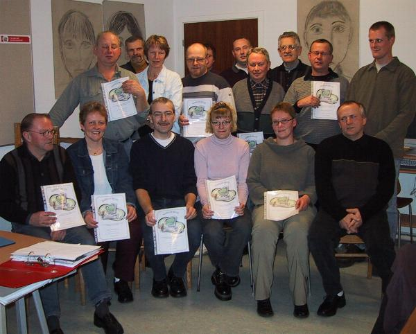

Flotte resultater af hjemmesidekursus |
 |
| Vi har i løbet af efteråret kørt et hjemmesidekursus med en underviser fra Erhvervsskolerne i Aars. Der var 22 deltagende foreninger og virksomheder. Kurset blev afholdt på skolen i Det digit@le værksted. Der er indtil videre kommet 12 nye hjemmesider ud af det. Der er links til dem på Links til Ullits Den første tirsdag i hver måned er der mulighed for at mødes i Det digit@le værksted til opfølgning på kurset. På billedet ses nogle af deltagerne med kursusbeviserne. Det digitale Ullits Jens Kristian Knudsen |